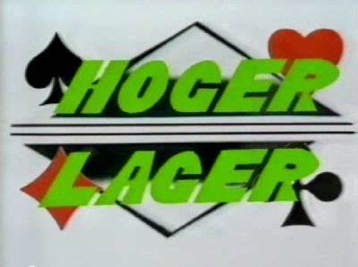

Hoger of lager
Een spel waarin je met de knoppen Higher en Lower speelt. Je hebt levens en munten, er staat een score in beeld en er speelt achtergrondmuziek.
Wat erin zit
- Levens en munten die tijdens het spel veranderen.
- Een score en tekst die laat zien hoe het gaat.
- Achtergrondmuziek die je zelf kunt bedienen.